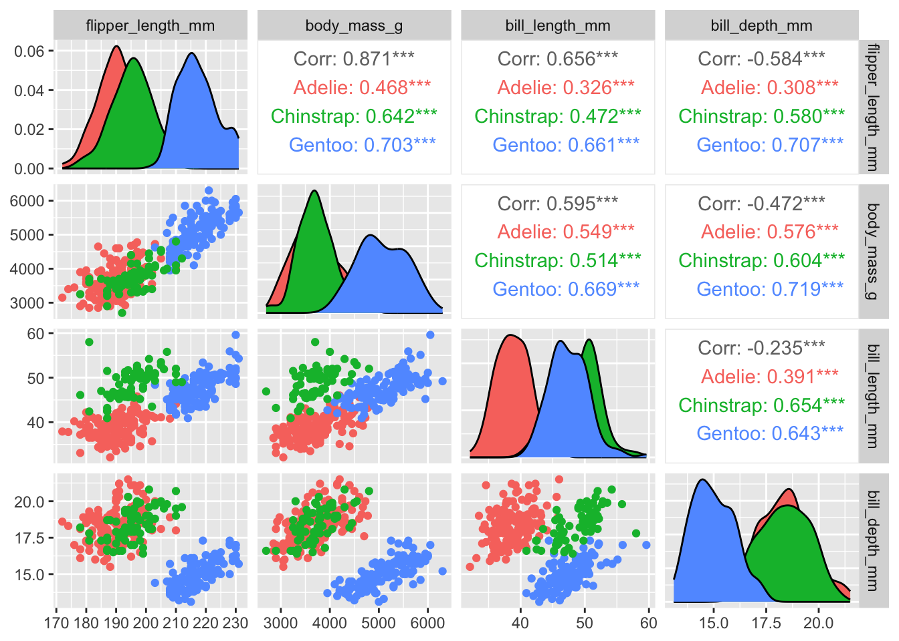

You can use the code button to expand the R code for some of plots below, but don’t worry if it doesn’t make sense. The plots are here to explain concepts, and we will learn about the code later!
2.1 Typical workflow
A typical workflow might be:
Data collection
Animal experiment records (e.g. nice Excel sheets or AirTable sheets/apps)
Data from a machine/instrument in the farm/lab (e.g. sensor data)
Prepare data for input to statistical software
Computer friendly column names
Basically any format can be imported. Usually .csv or .txt are easiest for beginners.
Data wrangling in R
wide vs long vs tidy formats
dates/times and data types
Data exploration and visualisation
Statistical Analysis
Export clean data to SAS for statistical analysis OR
run stats in R
Import SAS output (e.g. lsmeans) OR use outputs within R
Create publication-ready plots
There are 2 key steps in this workflow where data visualisation occurs:
Data exploration
Communicating data
2.2 Data exploration
Data exploration is an important initial process when first looking at a dataset. It’s a time for checking the quality and integrity of your data but also it’s a time to discover things you were not expecting to see.
Visualisation is key to data exploration, especially when your dataset is very large.
It’s also a rough process, and very little time should be spent trying to make your plots visually appealing to others. You may add titles or labels to help you remember what you plot, but you would probably leave many of the default settings. Using a R Notebooks, as we are in this course, are great for this process as you can keep your notes alongside your plots and your code keeps track of exactly what you did.
2.2.1 Example - lactation data
Recently I noticed some strange numbers when visualising a dataset with daily records for about 800 lactations.
Firstly, I plotted a count of how many lactations were in the dataset for each day (as a number from 1 to n).
Here we can see that the number of lactations per day decreases over time, which is ok but this was important to know. More importantly, there were some dots displayed between 100 - 200 DIM that did not make sense.
This led me to notice this:
It turns out that 1 cow had some DIM that were not integers e.g. 150.2 which meant they stood out.
After a range of filtering process, the final dataset was visualised and I had a consistent number of records up to 305 DIM… almost. Even this plot showed that there was very few records for less than 10 DIM. In addition, there was 499 lactations but there was never 499 records on any one day, meaning that there must have been some actual dates that had no records.
2.2.2 Example - comparing ‘means’
When we have experiments with treatments, sometimes we assume all the data is correct and proceed with statistics (and hopefully pick up some outliers in the process) or we just go straight to comparing the means of each treatment visually.
This can hide potential problems with your data, but also hides important, real attributes of your data. To take a simple example from the ‘palmer penguins’ dataset. The mean bill depth (mm) for 3 different islands is:
Once we’ve got the hang of building different visualisations to explore our data, we often find ourselves wondering what a 1 particular point on a graph is e.g. an outlier.
We can very easily find that data point in a table in R using some filtering OR… we can quickly visualise it interactively so that we can hover over a data point and see some information about it.
Code
```{r}#| code-fold: true#| warning: false#| message: falselibrary(plotly)p <-ggplot(penguins, aes(x = island, y = bill_depth_mm, colour = species, text =paste("sex: ", sex)) ) +geom_jitter()ggplotly(p)```
Notice the Simpson’s paradox? This is a great example of how correlations alone can be misleading.
Code
```{r}#| code-fold: true#| warning: false#| message: falsepenguins %>%select(species, body_mass_g, ends_with("_mm")) %>% GGally::ggpairs(aes(color = species),columns =c("flipper_length_mm", "body_mass_g", "bill_length_mm", "bill_depth_mm")) # If you are trying to run this code you will need to install.packages("GGally").# # The :: in the GGally::ggpairs() above tells R to look for the ggpairs() function within the GGally package, but without loading all of the functions from that package.# # It is also useful to remind yourself which package a function comes from if it is not something you use often.# ```

2.4 Communication and publishing
At this point of your workflow you’ve got a good idea about your data and there’s something from it that you want to communicate. There’s a lot of books and resources online, and conflicting opinions about what is best practice.
Visualisations can be very effective…. or terrible: viz.wtf
As animal scientists we often need to produce visualisations for presentations and for publications, which have different requirements.
For example, you won’t see this in a publication but it is effective in drawing attention to your data in a presentation (although there’s still room for improvement with this plot):
There’s also a page on this site that links to certain caveats to watch out for, such as the problems with a dual axis: https://blog.datawrapper.de/dualaxis/
Did I mention that opinions can differ? Some animal scientistis love these difficult-to-interpet graphs!
It just so happens that the authors of ggplot2 dislike dual axis plots and it is therefore inherently difficult to do with ggplot2 (with some exceptions)
For example, it is great for adding measures of significance (* or P values) to a plot, such as:
Note
This is the ggplot part of the code to make the above plot, but it won’t run as a reproducible example. It also won’t make much sense now, but after you finish this course it might!
Nearly everything in a plot created with `ggplot2` can be customised. Although this may be tedious at first, it becomes very quick to re-produce high quality plots. We will cover some of these, but if you can think of it, there’s a fair chance someone has already asked about it online!
I even made the logo for this course using an R package I found after googling some ideas.
See the code for the logo:
```{r}#| code-fold: true#| code-summary: "See the code for the logo:"string_df1 <- hershey::create_string_df(text ="Plotting in R", font ='futural') %>%mutate(row =1)string_df2 <- hershey::create_string_df(text ="for Animal Science", font ='futural') %>%mutate(row =2)string_df <-bind_rows(string_df1, string_df2)ggplot(string_df, aes(x, y, group =interaction(char_idx, stroke),colour = char,shape =as.factor(row))) +geom_path() +geom_point(size =1) +coord_equal() +theme(legend.position ='none')+facet_grid(rows =vars(row))```